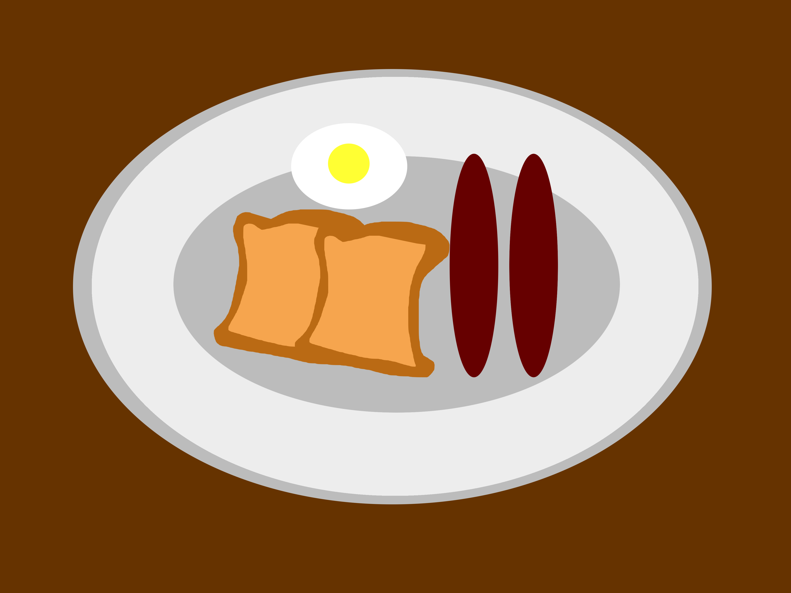
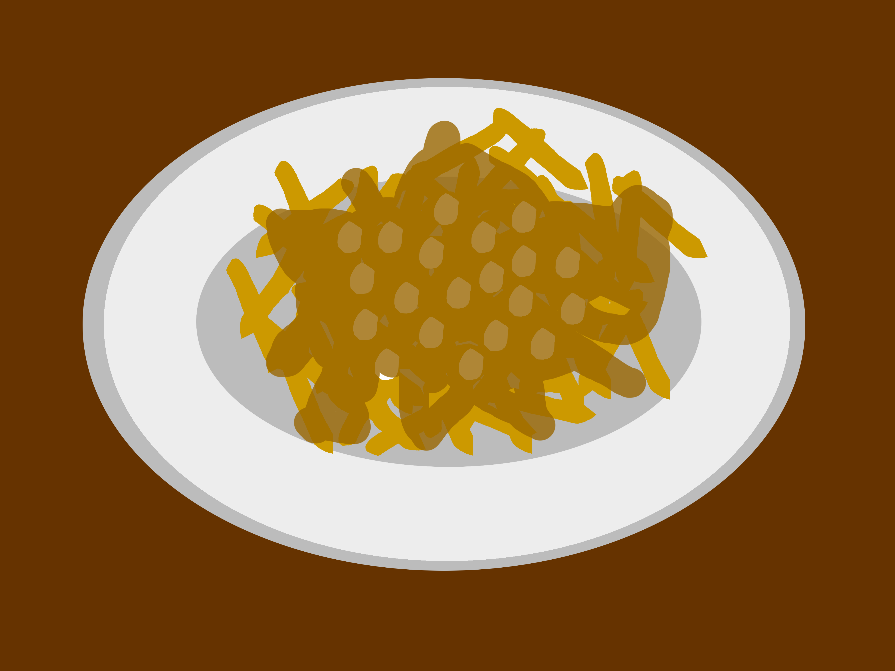
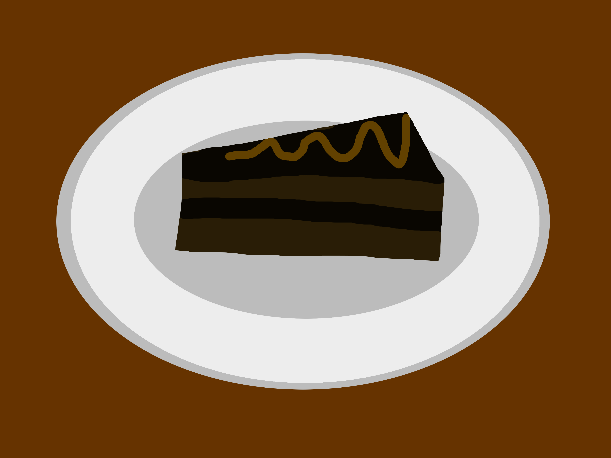

Menu
Le menu de Chez Poutino propose une variété de plats de poutine uniques et savoureux, conçus avec des ingrédients frais et locaux pour garantir une expérience culinaire de qualité supérieure. Les variations créatives de la poutine classique, ainsi que d'autres spécialités québécoises proposées sur le menu, reflètent la passion des fondateurs pour la cuisine traditionnelle et l'innovation gastronomique.
Déjeuners
| Repas | Description | Prix ($) |
|---|---|---|
| Le Bon Matin | Patates, deux oeufs, deux tranches de pain grillée et beaucoup d'amour. | 10 |
| Le P'tit Cochon | Jambon, patates, deux oeufs, deux saucisses et une petite poutine | 18 |
| L'enfantin | Jambon en forme de dinosaure, patates, un oeuf et une tranche de pain grillée | 6 |
| La Dent Sucrée | Crêpe au chocolat et au fromage accompagnée de fruits | 12 |
| La Dent Sucrée 2 | Deux crêpe au chocolat et au fromage accompagnée de fruits | 20 |
| Le Singe | Bananes coupées en morceaux avec un coulis de chocolat | 6 |
| L'Ultra Quart Avec Mayonnaise | Actuellement insdisponible dû aux grèves employés | 30 |
Poutines
| Repas | Description | Prix ($) |
|---|---|---|
| La Poutine Classique | Poutine classique avec de la sauce brune | 12 |
| Poutine BBQ | Poutine classique avec de la sauce BBQ | 12 |
| Poutine à la saucisse | Poutine classique avec des morceau de saucisses fumées, sauce au choix | 15 |
| Poutine au poulet grillé | Poutine avec des morceau de poulet grillé, sauce au choix | 18 |
| Poutine végétarienne | Poutine au tofu avec sauce végé | 14 |
| Poutine au fruits de mer | Poutine au crevettes avec de la sauce à saveur de palourdes | 25 |
| Poutine désassembler | Poutine classique, mais avec la sauce, le fromage et les frites séparés | 12 |
| Poutine poutine | Poutine à deux étages, chaque étage est une poutine au choix dans le menu | 24 |
Desserts
| Repas | Description | Prix ($) |
|---|---|---|
| Gâteau au chocolat | Pointe de gâteau au chocolat | 6 |
| Gâteau au fromage | Pointe de gâteau au fromage avec un coulis au framboise | 10 |
| Baklava | Pâtisserie sucrée à base de pâte phyllo, de noix hachées et de sirop sucré | 8 |
| Poutine dessert | Poutine classique avec une sauce au chocolat ou au caramel | 15 |
| Biscuit au pépite de chocolat | Un GROS biscuit au pépite de chocolat | 5 |